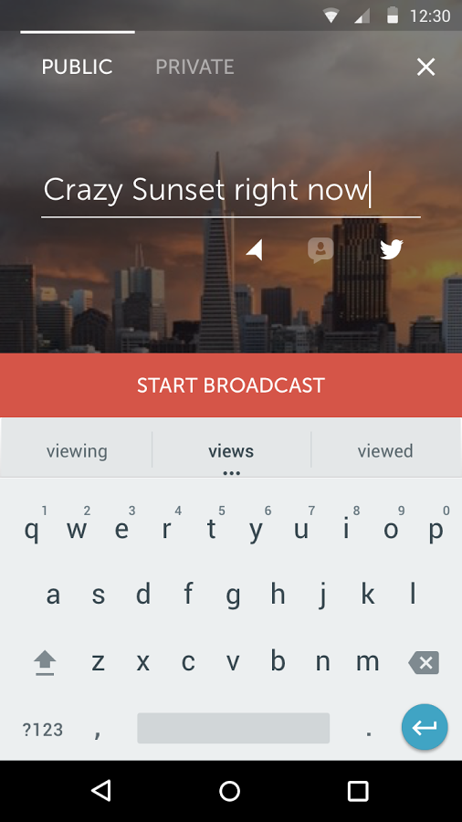
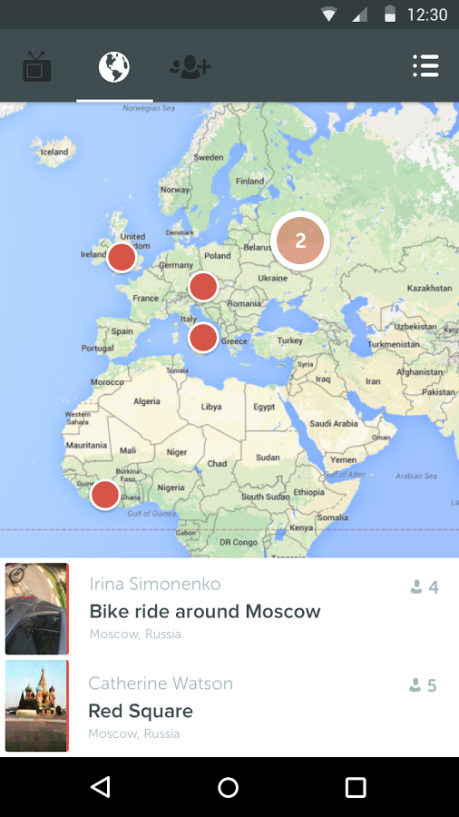

Periscope - приложение, которое позволяет вести онлайн трансляцию со своего телефона.
Другие люди могут подключиться к трансляции и общаться с ведущим с помощью чата. Это похоже на всем известный чатрулет, но не совсем, ведь здесь видно только одного собеседника.
Начать трансляцию можно одним нажатием кнопки, прощай сложный в настройке youtube! Прощай запись своих вебинаров, а затем долгая загрузка их обратно в интернет. Periscope сохранит все ваши трансляции.

Немного цифр
Через 10 дней после запуска у Periscope был уже 1 миллион пользователей. А через месяц после запуска твитер покупает его за 100 млн долларов. Такому сногсшибательному росту можно только позавидовать. А диванные аналитики говорили, что - "интернет уже не тот... взрывного роста уже не будет.. рынок охладел...". А вот на тебе сначала - Убер и теперь Перископ!
На главном экране приложения карта, на которой можно выбрать трансляцию с любого уголка планеты. И смотреть например, рассвет в Бразилии, или бэкстейдж с концерта. Или смотреть трансляции пользователей, на которых подписан. Если ваш друг начал трансляцию - то тебе обязательно придет уведомление.

Пользователи онлайн подключаются к вашей трансляции и комментируют онлайн. Вы видите комментарии в нижней части экрана вместе с видео.

Отдельный респект разработчикам приложения. Ведь с такой скоростью роста количества пользователей молодые приложения часто "выбывают из гонки", становятся недоступными из-за огромного количества новых пользователей и не подготовленной к нагрузке инфраструктуры. Чувствуется поддержка сильного twitter'а за спиной.